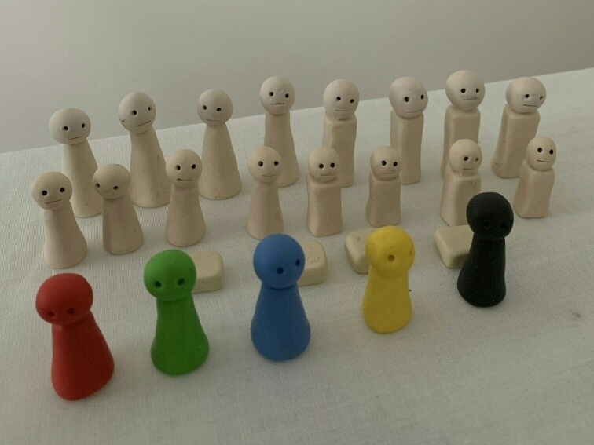
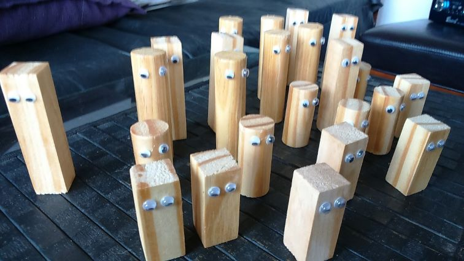

Las constelaciones familiares es una terápia sistémica desarrollada por Bert Hellinger. Esta terápia se basa en la idea de que las personas dentro de una familia están interconectadas y que los problemas individuales están conectados con problemas más amplios en el sistema familiar.
En una sesión de constelaciones familiares, un terapeuta trabaja con un grupo para explorar los patrones y dinámicas familiares y ayudar a identificar las fuentes ocultas de los problemas emocionales o psicológicos en la vida de alguien.
Los participantes suelen actuar como representantes familiars para ayudar a descubrir y resolver los conflictos subyacentes.
Las constelaciones familiares son una herramienta de terapia que busca ayudar a las personas a comprender las relaciones familiares y resolver conflictos emocionales y psicológicos.